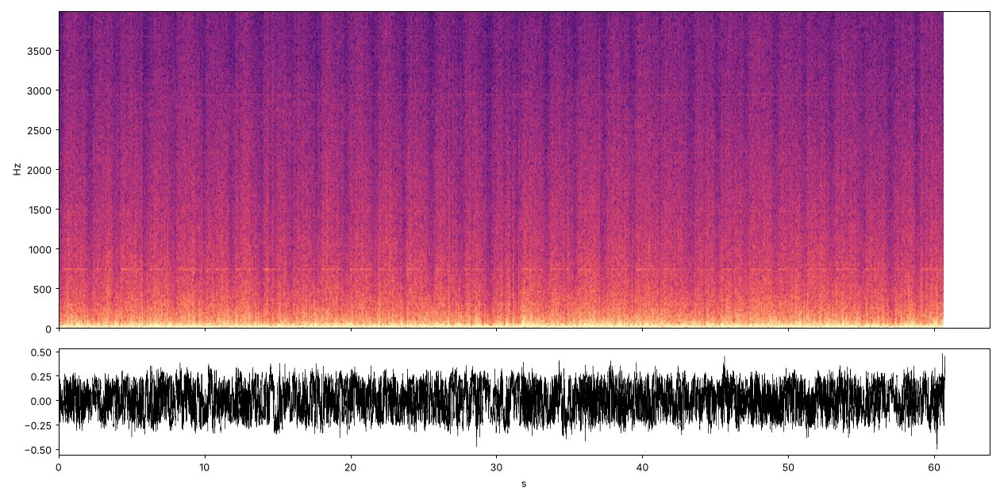

Out of Its Milieu
A month of Britain's mains frequency (August 2026, one reading a second) played through an ear this practice built for six church bells. One second of sound is twelve hours of grid. The practice cannot hear it. You can.

What the ear made of it (its own picture, unchanged). Height: how fast the grid wobbles, from a 2.5-minute cycle at the bottom of the coloured band to an 11-second one at the top. The thin line is a once-a-minute wobble.
Instrument or grid?
The practice carried three of its own instruments, unedited, into this material. Each one was made for something else. Each saw things. Before checking anything, the practice wrote down what it saw, and whether it thought the instrument or the grid had put it there. Guess first, then see what it guessed and what the check found.
What the grid's own tool shows
Drawn after the guesses were committed, from the per-second series. The comb, the day, the dashed line and the night's quiet are there.
The half-hour: mean deviation (mHz) by second within each half-hour, 31-s smoothed. It climbs before the boundary and drops at it.
By hour of day (UTC): strength of the 60-s line (bars) and energy of the 11 s – 2.5 min wobble (dots, scaled so the median hour sits at 3). Both fall away at night.
By hour of day (UTC): mean deviation (mHz). The highest hour is 20:00.
One day, 12 August, minute means (mHz), for scale: ±200 mHz is the operator's target band.
What was predicted
Strict counts, by the checks committed with each reading. Two of the misses fell short by under one percentage point. The work text says what that means.